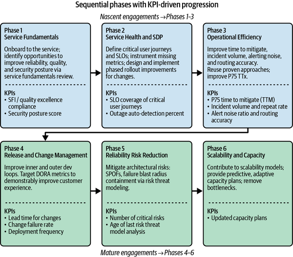

When considering or embarking on the SRE path, it’s paramount to discuss the interactions SRE will have with product development teams. Establishing a clear engagement model with product development teams will not only improve service reliability but will also help foster a healthy collaborative relationship.
This chapter explains:
What an SRE engagement model is, how to make it successful, and what outcomes to expect
The various approaches to scoping engagements, the differences between them, and where they might be used
The differences between SRE for consumer versus enterprise products
The evolution of SRE engagements at Google, and how we have matured from our previous engagement models to a newer, outcome-focused approach
The importance of communication and collaboration between SRE and its partners
An SRE engagement model refers to two things: the process by which SRE teams engage with their partners in product development, and the services SRE teams provide to analyze and improve the reliability of the services those product teams build. In practice, SRE engagement models:
Define the responsibilities, processes, and principles of the SRE/product development partnership. For SRE to be successful and to fulfill its mission, it is critical to manage expectations on both sides and to provide an interface that optimally supports the work.
Define how SRE teams decide what to work on. An engagement model that optimally supports this work selection is essential to the success of an SRE function.
Provide a written reference of these policies to minimize misunderstandings and help resolve conflicts.
The SRE engagement model at Google has undergone multiple iterations over the years and continues to evolve to keep pace with changing business needs and lessons learned along the way. This adaptability is critical to maximize SRE’s impact on the business and to keep SRE work as relevant as possible.
Regardless of the engagement model, several principles underpin a successful SRE practice.
This close-knit partnership requires effective communication and collaboration. Regular, open channels between SRE, development teams, and leadership are essential. One such channel focuses on formal information exchange, where SREs can talk about the state of the production environment, developers can talk about the state of their applications, and leadership can talk about the state of the business. These types of meetings are vital for increasing awareness of service state and improving operations to help move the organization forward and meet its reliability goals. The information exchange takes place on different timescales, from weekly operations syncs to long-term planning. This partnership model allows engagements to be dynamic and adapt to changing business needs.
It’s important to note that partnerships are not indefinite and will naturally evolve, concluding when a service has been optimized to a low-maintenance state, its business priority diminishes, or it is decommissioned. An engagement model helps provide clear guidance on how SRE support evolves through the service lifecycle (design, implementation, launch, operation, deprecation).
An SRE engagement model is important for SREs to understand their role, for developers to understand how to work with SRE, and for leadership to understand the purpose and value of SRE. A well-defined engagement model helps SRE be effective and stay true to its mission while reducing organizational friction, ambiguity, and conflict. The clarity provided by a written model can help organizations in the early stages of SRE adoption as well as mature SRE organizations.
Evolving the way SRE engages is critical to the growing maturity of an SRE organization. There are many aspects to this journey and many ways to assess the health of an engagement. Three dimensions that can be helpful in assessing the maturity of an SRE engagement are intent, impact, and value.
In practice, SRE can be anything from reacting to a constant stream of unexpected crises to proactively establishing long-term reliability practices throughout the development cycle. The mode of engagement that fits best depends on the immediate needs and strategic goals of the organization:
The primary intent is survival and immediate stability. The focus is on keeping critical systems running. This “firefighting” mode is often a pragmatic and necessary choice for organizations where establishing a baseline of availability is the most crucial, immediate objective.
The intent shifts to creating leverage and repeatable success. As the organization grows, it purposefully creates specialized roles and more structured processes. This requires a conscious decision to scale reliability efforts efficiently.
The intent is to deliver an ecosystem where products are reliable by default as a fundamental business advantage. The organization deliberately integrates SRE principles throughout the entire development lifecycle. The goal moves beyond fixing problems or scaling processes to collaboratively engineering inherently reliable products.
Most organizations have extremely complex software ecosystems that make gaining a comprehensive understanding of the whole challenging. SRE can deliver significant value by fixing localized problems, but building a company-wide view of the software landscape can unlock new opportunities. SRE should always strive to “look left and right” and deepen its cross-system understanding. This is often harder for product developers, with their highly specialized knowledge of individual systems.
There are two complementary ways for SRE to engage on the impact dimension:
SRE teams focus intensely on the reliability of a single “thing”—a critical service, a specific workflow, or a core piece of infrastructure. Their expertise is deep but narrow.
SRE’s perspective widens to encompass the overall ecosystem. This breadth-first understanding allows teams to identify systemic risks and critical workflows that span multiple components and prioritize addressing the top risks across the product.
The business value that SRE delivers can range from a collection of many independent small victories to a broad narrative arc that affects a product or business holistically. We consider three levels here:
Initially, the business impact is obvious but tactical: “keep the service running.” The justification for SRE is self-evident, especially in smaller organizations.
The question shifts to “Where can SRE effort produce the highest business impact?” Achieving this impact drives specialization and focus on the most critical areas.
At the highest level of maturity, SRE aligns directly with business outcomes. The focus moves beyond technical reliability metrics to questions like “How can we ensure that product launches succeed?” or “How can we measure and improve the reliability of the entire customer journey?”
SRE needs to become a strategically aligned partner to the business to achieve the broadest level of impact.
In defining an SRE engagement model, the first question to answer is how the following groups communicate and collaborate:
SREs
Traditional operators1
Developers
Product managers/owners
This will help you determine the scope of an SRE team and which parts of the product development and/or operations organizations it will engage with.
Google’s SRE organization is large and diverse and engages with many different partners. One can find almost every type and scope of SRE engagement at Google. Other organizations have scoped SRE in ways that meet their unique needs. There are a number of common approaches that can provide a foundation for an SRE practice. Most larger, more mature SRE organizations blend aspects of several of the approaches covered here.
Some of the themes covered in this chapter and Chapter 6—centralization versus decentralization, SRE/dev collaboration, maturity levels—necessarily overlap. As a mental model to differentiate between the two frameworks:
Also known as “everything SRE,” this is often the approach taken by the first or only SRE team in an organization, with an unbounded scope across many services or workflows. That team may act as a unifying force between disparate product development teams and can be a powerful catalyst to shore up lacking standards. However, such a broad scope risks overloading the team and leading to shallow contributions. As demand for SRE outgrows staffing, the kitchen sink approach can become extremely toilsome, causing the team to essentially revert to a traditional operations mode.
Kitchen sink SRE teams are often reactive in nature and may lack strategic impact. They can be breadth-first or depth-first in their scope. A breadth-first approach focuses on high-level contributions across the ecosystem, such as establishing a postmortem process across the company, whereas a depth-first approach focuses on the services that currently have the most issues.
SREs can be placed directly within product development teams so that they are very hands-on with code and configuration. They may not even hold the title of SRE, but may be developers with a partial or full focus on the reliability dimension of developing and operating the product. This approach enables focused SRE expertise and side-by-side demonstration of SRE practices. Take care to avoid lack of standardization across different teams and make sure to provide opportunities for SREs to mentor their peers.
This model is useful for starting an SRE function or driving adoption within specific development teams. Embedded SREs are an integrated approach that can drive strategic impact, but they’re inherently depth-first in their scope, which creates the risk of being isolated and not learning about common reliability improvements across the company.
A product SRE team, one of Google’s more common models, works to improve the reliability of a specific critical product area. This approach provides a clear focus linked directly to business priorities. However, without a unified underlying platform or centralized SRE practice, this structure can lead to duplication of base infrastructure and divergence of practices across product teams as complexity grows, limiting knowledge sharing and mobility. This archetype is often implemented as a specialized team for key user-facing applications with high reliability needs after the foundations of SRE are established. In many cases, embedded SREs from early-stage applications go on to become the founding members of a dedicated SRE team.
Scoping SRE around products makes it easier to show direct business value. Product SRE teams typically have cross-system visibility within their product area but can be depth-first silos when viewed from a company-wide perspective.
SRE teams that focus on underlying infrastructure aim to make other teams’ work faster and easier. In legacy environments, infrastructure SRE may be tightly coupled to an application’s hosting environment, for example through application VMs running on a specific hypervisor platform. The infrastructure provides only a thin abstraction over the underlying hardware. As a result, the team still manages many infrastructure components itself, like a fully configured OS running on a VM. More modern versions of this archetype maintain shared infrastructure services such as Kubernetes clusters along with common components such as CI/CD and monitoring as part of a common production platform.
An infrastructure SRE team that implements a proper platform with a product mindset is effectively a modern platform engineering team, likely made up of both developers and SREs. This approach suits companies with several development teams needing common infrastructure standards. An infrastructure SRE team should reduce the need for SRE staffing elsewhere and provide opinionated solutions that bring best practices to engineering teams. Infrastructure teams help the SRE function to specialize while driving breadth-first impact.
A tools-focused SRE team specializes in building software to help product development counterparts measure, maintain, and improve system reliability, including support and planning systems. If the tools they build are not closely aligned with frontline reliability issues, the team may expend effort solving the wrong problems, potentially increasing toil and overall workload for everyone. A dedicated team with this scope is best suited for organizations requiring highly specialized reliability tooling not readily available as open source or third-party software. In many cases, tool development is completed as part of a shared reliability backlog, not requiring a dedicated team. In larger organizations, a tools-focused SRE team may be tasked with identifying innovations created by individual product SRE teams and then generalizing, building, and supporting them for the business at large. Tools teams help to move away from a reactive mode and establish integrated reliability work throughout the development lifecycle.
A consulting approach to SRE engagement focuses on providing temporary advice and guidance rather than directly changing application code or configuration. It can help scale an existing SRE organization’s positive impact by providing product SRE teams with extra capacity on a temporary basis—perhaps for SLO development, a production readiness review, or to resolve long-running reliability deficits. It may also provide specific niche knowledge or skills that aren’t needed in the long term. This work may be project-based or delivered through an office hours format. A consulting approach is suitable for large, complex companies or for initial part-time staffing. It’s a good way to deliver optimized impact across a broad scope of services and can be proactive or reactive. The main concern with this approach is that consultants may lack sufficient context to offer useful advice, leading to a perception of them being hands-off even when they are capable of significant indirect technical impact.
In reality, many organizations benefit from adopting a blended approach in which the type of SRE engagement varies by application or team. In this model, each team’s scope is tailored to the business needs in a particular product area. This approach maximizes collaboration between SRE and its various partners and combines the strengths of the different scoping models. Consider a hypothetical blended example:
A central SRE function that includes a tools team provides unified production standards, while offering capacity via a consulting model as needed.
Nascent applications use embedded SREs during development and early production.
More mature or critical applications rely on dedicated product SRE teams.
Infrastructure/platform SRE teams own core infrastructure and provide infrastructure SLOs that products can depend on.
The products use the common infrastructure so that the product SREs can focus on product-specific reliability concerns instead of duplicating infrastructure.
All SREs enter the company through unified onboarding.
A chief reliability officer (CRO) advocates for reliability and maintaining standards at the highest level.
By far the most common approach seen in practice2 is the kitchen sink approach, as it can be implemented initially by simply renaming a traditional ops team “SRE.” Sadly, renaming the team is often where the innovation stops. A proper kitchen sink/everything SRE model is actually a logical starting point for organizations looking to leverage their existing knowledgeable people while testing strategies to improve reliability and control toil. However, SREs can end up being on-call for everything and losing their ability to do actual engineering work.
The second most common is the embedded approach. Often, the funding and scale do not exist yet to create dedicated application SRE teams for various products, and there is work to be done to resolve toil deficits and implement reliability measurement. Transforming some subset of developers into embedded SREs, possibly with some additional people brought in from outside, such as experienced SREs or engineers new to the discipline who are open-minded, can be a powerful way to start on the path to dedicated SRE while allowing headcount to grow gradually. These embedded SREs likely won’t be the only pager holders for incident response—or at least, they shouldn’t be in order to maintain healthy on-call shifts. The composition of the on-call rotation typically changes as the service moves toward a more dedicated model, often with SRE taking on the bulk of primary incident response while product development teams provide an on-call escalation path for complex business logic issues.
A similar rollout strategy based on renaming roles also exists for the infrastructure model, making it another common early approach to implementing SRE. The key to this being effective is to instill a product mindset and focus on the infrastructure through the SRE lens of providing reliable services, not just compute.
The nature of the existing service architecture may influence the choice of scoping approach. An organization with a few bespoke, monolithic services may gravitate more toward a vertically integrated product approach, whereas an environment of highly uniform microservices may favor a stronger use of infrastructure teams.
An organization might start out with just one or two archetypes implemented, but the archetypes should evolve over time. SRE is there to serve the business, not the other way around, and the model adopted should reflect both the business priorities and the values of healthy on-call, toil control, blamelessness, and so forth (for more information on these topics, see Chapter 4). As the SRE function grows and matures, building a mix of product teams supported by infrastructure or tooling teams makes sense. The product-oriented SRE teams provide the best business alignment, while the other teams mitigate the risk of tool and knowledge silos.
Dynamic engagement scoping is preferable to static approaches—otherwise, there is a risk of a drift toward misalignment with product requirements over time. The periodic reevaluation of an SRE engagement allows, and even encourages, the scope to change with an application’s maturity, reliability needs, and level of success.
Core SRE principles and practices are applicable to any product, but SREs engage slightly differently depending on whether it is a consumer or enterprise product. Google is active both in the consumer and enterprise spaces and uses its common SRE engagement model for both. However, there are nuances that need to be considered due to the different needs of these user segments. To illustrate how and why, let’s define what we mean by consumer and enterprise:
Products that are marketed to individuals directly. The buyer is the user.3
Products that are marketed to companies or organizations. The buyer is typically a high-level decision maker, like the chief technology officer (CTO) or a committee, not the direct users.4
With consumer products, the users tend to have many choices and the freedom to move to competitors. Customer numbers may be measured in millions or even billions. This level of scale means the business has to optimize for margins and volume. Scalability is an ongoing challenge as user adoption increases.
With enterprise products, the buying process is lengthy, involving contract negotiations. The company optimizes its business around large customer deals with a concentration of revenue. As such, growth tends to be more controlled, and the business depends on keeping critical large customers. Relationships and trust are of utmost importance.
When SREs are focused on problems at scale, as is often the case with consumer products, they tend to rely on metrics and standard practices to manage system reliability because these approaches provide the greatest return on investment. When SREs are focused on relationships and trust, as is commonly the case with enterprise products, they have to adopt more tailored, customer-specific approaches. This setup changes some aspects of how SREs engage.
Both enterprise and consumer product SREs engage in partnerships with their respective development teams. They drive reliability outcomes and provide foundational offerings such as SLOs and incident management. Both groups share objectives relating to building generic mitigations, improving change management practices, and limiting blast radius. However, the specific outcomes and implementations may differ due to differences in how their businesses operate.
This doesn’t mean consumer-focused SREs never incorporate the practices from enterprise-focused SREs, or vice versa. They do. However, even the shared practices often vary slightly in implementation.
Some products are marketed to both consumers and enterprise customers. Videoconferencing, email, file sharing, and messaging products are good examples. In these cases, SREs may use a combination of both approaches to deliver a reliable experience for all customers.
In consumer products, SRE engagements follow the business model, prioritizing outcomes that optimize for margin and volume. The SRE team focuses on the parts of the product where the numbers say it is needed the most. However, in enterprise products, the degree of investment in the long-term relationship means a single customer’s trust is just as critical as any SLO. SREs in enterprise companies must adopt a nuanced understanding of reliability. For example, they may have to respond when customers’ workloads are broken, even when the system is running well within its SLOs. They may also have to design deployment strategies that prevent changes during times that are critical business opportunities for customers: for example, Black Friday for retail customers and New Year’s Eve for social media customers. They may even favor weekend rollouts for traditional nine-to-five businesses. This affects how they approach their SRE offerings and outcomes.
SLOs and error budgets are more effective in consumer environments because the business relies on large volumes of customers interacting with the product. SREs sometimes complement the SLO-based approach with external sentiment analysis, for example using Google search trends or social media posts as a signal to detect customer dissatisfaction.
In enterprise environments, SREs have to respond to some single customer reports the same way as with large outages because the loss of trust from one big customer can have an outsized impact on the business. Hyrum’s law further complicates the definition of reliability in enterprise products:
With a sufficient number of users of an API, it does not matter what you promise in the contract: all observable behaviors of your system will be depended on by somebody.
Customers of an enterprise service often rely on undocumented or implicit guarantees of system performance and product behavior. Enterprise customers care that the system is predictable and dependable. Unfortunately, customer-impacting behavior changes are difficult to detect via traditional SLOs because they require monitoring the business logic, not just system metrics. Additionally, exhaustive monitoring of the business logic is not practical due to the number of possible flows through the code. As such, SREs tend to have to focus on a subset of critical journeys through the system.
For the most critical product behaviors, probers that generate synthetic traffic and mimic customer behavior can improve issue detection, but they have limitations. Covering the full set of potential behaviors would require covering all possible flows through the system, and since the customer base is smaller in enterprise products, too much synthetic traffic runs the risk of drowning out signals of real customer pain. As such, enterprise SREs often incorporate support cases as an incident detection signal.
The incident management practices discussed in Chapter 10 apply to both enterprise and consumer services. However, in enterprise contexts, trust in the long-term partnership is most essential, whereas in consumer contexts, the speed of mitigation is the most critical concern, because user happiness and retention are tied to service availability. SREs supporting consumer services decide how urgently to respond and how much risk to take to resolve the outage based on numbers: percentage of impacted customers, drops in traffic, or changes in revenue-impacting measurements such as sales or sign-ups. Incident response becomes a “mitigate first, ask questions later” process.
With enterprise products, the definition of an outage is more subjective, requiring that on-callers have more business context and understanding of specific customer needs. SREs must triage whether a change in system behavior should be treated like an outage, often even when the system is within its SLOs, and due to the relationship management aspects of enterprise engagements, they typically take a “communicate to the customer first, mitigate second,” approach. In very large companies, this may mean informing customer account managers, support engineers, and even customers directly to support them throughout the outage. Having dedicated responders who own making sure there is clear customer communication is critical. Of course, speed of mitigation is still important, but enterprise customers want to be well informed during the process.
Enterprise-focused SREs may find mitigation is more difficult because the customers’ unique and specific tolerances for risk must be considered. Additionally, as mentioned earlier, enterprise customers may expect behavior-breaking changes to be treated as full-scale outages, making many common generic mitigations ineffective: you can’t restart the job, add more capacity, or migrate the workload to resolve the issue.
If the change was recent, rolling it back is still the best option, even if the change is working as designed. However, when dealing with a smaller number of very important customers, the behavior-breaking change may go unnoticed for weeks or months before a customer triggers it. At this point, it could be unsafe to roll it back because other customers are now depending on the new behavior. In these cases, SREs must find a quick way to alleviate the pain for the customer experiencing the problem, without causing problems for other customers. This requires a deep understanding of the customers’ needs so that a surgically precise solution can be implemented. One proactive solution is to build the architecture such that large customers are isolated architecturally, allowing safe and tailored mitigations.
Both consumer and enterprise SREs drive outcomes to improve the overall system design, partnering with development teams to ensure that the architecture contains failure domains that help limit the blast radius and severity of outages. The key difference is that consumer product SRE design decisions tend to focus on sharding by groups of users or gracefully degrading functionality. These architectural decisions are often hidden from customers.
In enterprise systems, however, it is often unacceptable for the system to fail for even a single customer. Each customer’s business relies on the system being available, so the stakes are higher than for a typical consumer service. Additionally, enterprise customers might not be tolerant of the graceful degradation of a system behavior if their business depends on that behavior. Because of this, enterprise products often expose customer-facing failure domains, allowing customers more control over how they handle failures. For example, customers may build their own fallback systems. As such, some architecture decisions are driven by reasoning about customers’ resilience capabilities.
In consumer products, SRE teams have some flexibility in how they organize—for example, by customer experience or by service boundaries. Often the engineering work and incident response aligns with the system architecture. Teams can also engage across multiple similar services, assuming they share a common production platform and the engineering challenges are similar.
Ultimately, in enterprise environments, SRE spends more time on customer-specific efforts. As such, the teams need to be sufficiently staffed to be able to learn about and address the challenges of key customers. Since customers don’t care about organizational boundaries, enterprise SRE teams generally work best when aligned in a way that reflects how the customer experiences the product, not service boundaries. For example, all services related to authentication and access could be bundled, instead of grouping them by frontend and backend services. This setup allows teams to more quickly address customer-impacting issues with engineering efforts and incident response, and it aligns with how their partners are organized.
While understanding which approach to SRE fits best in a given organization helps to scope the engagement of an SRE team, it is not yet a concrete implementation of an engagement model. In this section, we are going to look at how Google’s SRE engagement evolved to cover the needs of a large organization that uses a common engagement model framework to cover the full spectrum of different scopes.
SRE originated in Google’s production team in 2003, which consisted of seven engineers at the time. It was essentially a kitchen sink model. The “S” in SRE reflected the team’s straightforward mission: “to keep the site (google.com) up.” As discussed previously, this approach can be considered relatively reactive and tactical. As the company grew rapidly and the discipline matured, SRE expanded to dozens and eventually hundreds of teams. Its role diversified, and so did the scope of engagement, extending to product, infrastructure, and tools teams. Some teams began offering consulting services or temporarily embedding SREs in product development as part of their engagement model. Meanwhile, the centralized SRE organization became increasingly specialized, breadth-first, and optimized in its impact. Over the more than two decades of Google SRE’s existence, the engagement model has continued to evolve and mature, striving for a more integrated approach and strategic business impact.
Google originally used a strict onboarding process for SRE, production readiness reviews (PRRs). This model later evolved to a more nuanced approach with multiple engagement tiers. The third and current iteration of Google SRE’s engagement model shifted the focus to business outcomes instead of services. Each approach has its value and limitations. While Google SRE has moved away from a strict PRR model and tiered engagements, they can still be a great fit for organizations with different needs on their own unique SRE journeys. We’ll discuss all three of them here, as well as why Google SRE changed its approach over time.
Initially, SRE at Google offered a binary engagement model: a service was either “SRE-supported” or not. The transition was gated by a production readiness review.5 It was a depth-first approach, without a lot of gray areas. Services without SRE support were designed, implemented, and operated by their development teams—the “you build it, you run it” model. Only the most business-critical services received SRE treatment, and SRE engagement came as a package of many responsibilities: primary on-call, writing postmortems, design support, engineering project work to increase the reliability of the application and its infrastructure, monitoring, automation, release engineering, and capacity planning, among other things.
All SRE work was grounded in Google SRE’s mission statement:
Ensure Google’s products and infrastructure meet their availability targets.
Subject to (1), maximize long-term feature velocity.
Use software rather than human toil to accomplish (1) and (2).
Engage only where it is more efficient for SRE than for product development to do (1) to (3).
The SRE team’s funding was directly tied to the services it supported. Each newly supported service typically required a certain amount of headcount being transferred from the development organization to the SRE team. The more complex the management of the service, the higher the headcount requirements. This funding model provides an incentive mechanism for development teams to design simpler and more robust services, to reduce the cost of SRE support—they’re inherently incentivized to minimize the combined cost of better system design and the operational cost, which reduces the total cost of ownership (TCO) for the company.
Any service under consideration for SRE support underwent the PRR process, which often took multiple quarters to complete. Experienced SREs would analyze all the operational aspects of the service and produce a list of things to improve before it could be onboarded to SRE (i.e., before SRE took over primary operational responsibility). Typical action items from a PRR include:
SLO definition
Reducing pager/ticket workload
Delivering better or more complete operational documentation
Implementing progressive rollouts
Creating backup and restore plans
Setting up capacity planning plans
Defining and defending failure domains
Many of these changes are minor but have a major impact on service operability and reliability. However, some action items surfaced in a PRR require substantial changes to the service’s architecture or infrastructure. Additionally, the SRE team needs to be trained on the service. Often, it’s viewed as easier and more sustainable to change the service’s infrastructure to align with the SRE team’s existing standards than to train the SREs on an additional set of standards.
The reason behind this careful approach is twofold. First, it’s a unique opportunity to increase the maturity of the service in close collaboration with the development team. Once the service is onboarded, both teams are likely to turn their attention to different projects, and fundamental service improvements may be harder to justify even though the operational burden remains.
Second, onboarding a new service is a substantial risk for the SRE team. Most of the time, this team is much smaller than the development organization it’s working with. As a result, the development organization is often in a better position to absorb operational toil, while a single bad service can derail the SRE team. Not only can a bad service affect the well-being of the team, but it can also have negative side effects on other services the SRE team supports. Of course, operational overload from poorly behaved services can always spill over to development partners (see Chapter 10), but that still means SRE is operating at its toil limit.
At Google, this model unintentionally led to SRE engagements that were “sticky.” Once a service was onboarded, it was difficult for SRE to move on to other, more critical service engagements without lengthy discussions around funding and handovers. The value SRE can provide through engineering improvements may diminish over time as services mature, so sticky engagements may lead to an increased share of operational responsibilities for SRE. Additionally, the required knowledge for these tasks stays with the SRE team indefinitely, preventing the development organization from growing its own production understanding and becoming more self-sufficient. The cognitive load from managing all these services also limits the SRE team’s ability to take on new work.
These heavyweight engagements are suitable for only a small number of complex and business-critical services. Most services do not start their lifecycle in this category but grow into it over time. As a result, we found that SRE would typically engage fairly late in the service lifecycle, when it becomes increasingly hard to make substantial changes to the architecture or infrastructure in a cost-effective manner. The appetite for early engagement was outgrowing this engagement model.
Google SRE still practices PRRs for projects where the gained insight is helpful, but they are no longer the center of the SRE engagement model. Instead, they are part of a bigger toolbox that supports both lightweight early engagement for dynamically evolving projects and deep engagement for complex, mature services. This approach has proven to be more scalable and collaborative than the original PRR-centered model.
Addressing the desire for early SRE engagement resulted in the development of a tiered engagement model, with SRE offering three tiers:
A lightweight approach based on consulting, training, and ad hoc help that does not require dedicated funding
A middle tier that encompasses SRE project work without a full SRE onboarding; especially suited for the early development phases of a new service
The full set of SRE capabilities, including project work and operational support; has the highest requirements on service stability and maturity
The idea behind this model was to cover more of the service landscape with tailored, breadth-first support and at the same time offer engagement at a lower overall cost. It enabled SRE teams to scale their support and deepen their cross-system, end-to-end view of the service landscape. Additionally, it permitted SRE engagement early in the service lifecycle, when SRE can have the most impact on the long-term health of the service.
The baseline tier could be implemented in many different ways. Typical elements included SRE-run postmortem reviews, SRE office hours for one-off advice on reliability topics, consulting projects where an SRE guides a group of developers through a production-related project that they execute, and escalation support for developer on-callers during especially demanding incidents. What these items have in common is that they provide flexible, relatively ad hoc SRE engagement within a capped time budget. They also avoid high ramp-up costs and the need to maintain service-specific knowledge in the SRE team. This was Google’s implementation of the consulting model.
The assisted tier was much more involved. While the participating services usually did not go through a full PRR and not everyone in the SRE team needed to be trained on these services, the time investment was much higher. The work was usually centered around reliability-related engineering projects. Often, one or more SREs would be “embedded” directly into the development team for the duration of the project. While this tier did not include full on-call support, some SRE teams offered a shared on-call model for services that fulfilled a set of criteria. Most notably, the services needed to follow production standards that made it easy for the SREs to understand and manage them.
Finally, the full support tier offered the complete set of SRE capabilities, including on-call support and a long-term SRE/product development relationship, not much different from the original SRE engagement model.
A goal of the tiered engagement model was to enable services to move more fluidly between the tiers than the old model allowed. Services could leverage baseline support very early in their lifecycle. They could move to the assisted tier without the high onboarding costs or a long-term commitment. Services that actually warranted full support could much more easily transition from the assisted tier. Similarly, when a service no longer qualified for a higher tier, it could be moved more easily to a lower tier without ending the engagement completely.
However, the model did not deliver these results in practice as often as hoped. Moving a service between tiers turned out to be almost as tedious as onboarding and offboarding in the old model. Developers were very hesitant to “give up” a tier they had “earned.” SREs, in turn, were be careful about which services they allowed in each tier, out of concern that the decision would be effectively irreversible later. Additionally, it turned out to be much harder than expected to maintain a deep SRE/product development relationship with a large and ever-changing set of services. This affects the effectiveness of the engineering collaboration and makes it harder to build trust and expertise.
The biggest problem with the tiered model was that it was still centered around on-call responsibilities: baseline had none, assisted might have some, full had the total set. The implied hierarchy in the tiers (full > assisted > baseline) made it hard for the assisted and baseline tiers to gain and maintain traction. The whole engagement conversation was still framed around “who holds the pager,” with full SRE support being perceived as “best.” Ironically, the model that set out to emphasize SRE’s engineering work reinforced the perception that SRE’s primary function was on-call support.
As recently as 2025, Google SRE revised its engagement model again and retired the engagement tiers. The new model attempts to maximize SRE’s strategic business impact through durable engineering work. Google SRE continually evolving its engagement model is a good example of SRE’s cultural focus on learning and continuous improvement (see Chapter 4).
The first change was to look at SRE work in the context of broader partnerships. Each partnership typically incorporates a Google product area (such as Google Search, YouTube, or Cloud Databases) and the set of SRE teams supporting it. Funding is discussed only at this level, to avoid the sticky, transactional behavior that plagued the previous models. Additionally, the scope and overall reliability strategy for the set of products is defined at the partnership level.
All services in a given partnership are eligible for the foundational offerings, which the SRE team always offers regardless of what outcomes SRE is driving. Similar to the offerings in the baseline tier, these are a set of highly scalable capabilities that all services in scope of the partnership can benefit from and are independent of the other reliability work SRE is driving. These offerings usually do not require long-term collaboration or deep service-specific expertise. Examples include postmortem reviews, SRE office hours, and an escalation on-call team for high-impact outages called an incident response team (IRT). Which concrete SRE services are provided is negotiated in the context of each partnership. The foundational offerings enable SRE teams to flexibly engage where needed without risking sticky commitments.
The vast majority of SRE work is organized around outcomes. An outcome defines a reliability goal that can be achieved through engineering efforts. An effort is a full-fledged software engineering project, and an SRE team should focus on a few in parallel at most. Examples might include “Reduce the operational workload by x%,” “Define and defend user-centric SLOs,” “Design and implement an architecture with multiple failure domains,” or “Design and implement a data integrity and restore plan.” If you are seeing that the same outcomes are needed in many services across many partnerships, such as common tooling for safe rollouts, it is probably a strong indicator that SRE leaders should consider forming an infrastructure SRE team focused on providing a standardized solution. These outcomes then become part of the production platform and do not require additional engineering work from the Google product SRE teams.
Only after the outcomes and the supporting efforts have been agreed upon is the required work split between the SRE and development teams. Most efforts require contributions from both sides. Most of SRE’s work will be software engineering, such as building or changing application and infrastructure code, but some of it will be operational, such as being on-call. Often, but not always, being on-call or taking on other operational tasks supports SRE’s engineering work. It can be very hard to improve the reliability of a system without seeing its issues and failures firsthand—an observation that applies just as much to developers as to SREs! But it is important to understand that SREs should go on-call because it helps them gather information for SRE’s outcome-focused engineering work.
Efforts usually come with a rough timeline, much like any other engineering project, to avoid sticky engagements. When an effort is completed and the desired outcome is achieved, SRE can move on to a different effort or define a follow-up effort where appropriate. The SRE and development leaders for a product area keep a list of potential outcomes ranked by their business priority. Only the efforts that support the highest-priority outcomes get staffed, until the SRE team’s capacity is fully utilized. If the current SRE staffing is too small or too large for the potential priority work, staffing between the SRE and product development teams can be rebalanced by the leaders. The funding is no longer transactional based on individual engagements, but rather takes a strategic long-term view. Headcount is more intentionally reused for new high-priority efforts, instead of being tied to sticky engagements that have outlived their utility.
Leadership periodically reviews and updates the list of desired outcomes. Sometimes, business priorities change or projects are no longer relevant. This process ensures that, at any given time, the SRE team is focused on the outcomes most valued by their development partners and the business.
While many aspects of Google’s SRE engagement model have changed over the years—and most likely will keep evolving—the most important principles have stayed the same. As elaborated in “What Is an SRE Engagement Model?”, the purpose of the engagement model is to:
Keep SRE focused on its mission.
Maximize the value that the work done by SRE provides to the business.
Provide mechanisms to avoid SRE team overload.
Enable smooth collaboration between SRE and product development.
We think it’s important to demonstrate how different organizations—both inside and outside of Google—have mapped reliability into their corporate culture. To that end, we next provide three case studies detailing how engagement models evolved in Google’s Persistent Disk SRE team and the Microsoft Azure and Disney Global SRE organizations.
In 2024, the Persistent Disk SRE team was one of the first teams at Google to apply the newly evolved engagement model.6 The change was driven by necessity: the team had been struggling with overload and morale issues. Adopting the new model improved the team’s health and productivity, as well as its relationship with its development partners.
In 2023, the Persistent Disk SRE team was following a semi-embedded SRE engagement model. It still reported to the central SRE organization and had SRE managers. The team’s structure was based on the staffing needs of the on-call rotations, since SRE took on most of the operational and on-call work for the product. However, each team member was aligned with a separate product feature team.
Team members got their engineering work assignments from their partner managers directly, usually operating within a feature development or architectural migration project, adding capabilities like alerting and observability. Since the SRE team was much smaller than the development organization, SREs were embedded in only the most critical engineering efforts. For other efforts, SREs would simply consult, or in some cases, perform the PRR.
Over time, this model created a number of challenges. For one, it overloaded the SRE tech leads (TLs), as they were the team members most experienced at doing the consulting and PRR work. They also had to provide technical leadership across the various feature efforts where the SRE team was engaged. With the more senior members of the team stretched thin, the less experienced team members didn’t get the guidance and feedback they needed.
Another challenge was that development partners struggled to understand exactly what SRE owned, largely because the answer varied based on what tasks SREs were assigned at the time. When asked, they might say SRE owned capabilities such as “monitoring,” but the development team would interpret that as meaning “all monitoring,” while the SRE team couldn’t scale to perform all monitoring work across the product. This led to confusion.
The team also reported low morale. They felt like an extension of the dev team, not a team in their own right, and they struggled to see their purpose and mission. Managers were unable to exercise their engineering acumen to help the SREs with their work because their teams were working on too many things. Everyone recognized that something needed to change.
The SRE managers surveyed their teams to identify the core issues. Using this data, they approached SRE and product development leadership for support in changing how the team engaged.
First, SRE and product development leadership defined the foundational offerings, which were the activities that the SRE team would always perform regardless of what outcomes SRE was driving. Both parties agreed that SRE would offer an experienced incident response team for managing outages and would respond to product SLO alerts. SRE also took ownership of geo-expansion, the automation and operational processes required to deploy the Persistent Disk product to new cloud regions and zones.
Then leadership identified the key outcomes that SRE should drive:
Improve customer experience during outages by reducing the time required to detect, triage, communicate, and mitigate incidents.
Implement and regularly exercise a repeatable disaster recovery strategy for the top product risks.
Reduce the cost of running the product by eliminating the top sources of operational load.
Accelerate the rate of feature releases and rollbacks by refactoring software and configuration deployments.
The SRE managers organized the SREs into four teams to deliver the outcomes. The TLs wrote technical strategies and roadmaps, framed as engineering efforts, for how they planned to move the needle on each of the areas. Using the strategies and roadmaps, the product development managers and SRE managers renegotiated the operational and on-call load so that the SREs owned only what was necessary to deliver the outcomes and foundational offerings. Since the teams were no longer aligned based on their on-call and operational duties, managers created on-call rotations that were decoupled from team structures.
Finally, during OKR planning, the teams wrote their OKRs in terms of progress they planned to make on a given outcome.7
Initially, there was some resistance to the new model. Some of the SREs had built their sense of team identity based on the features they had helped build when they were embedded, and management was asking them to step back and focus on a broader reliability challenge for the product. Some product development teams also struggled with the change, as they had gotten used to their embedded SREs just handling certain problems for them. The most notable problem was setting up alerts. To mitigate this, as part of the transition, SRE took on an engineering effort to make it easier for the development team to create and deploy its own alerts for features.
After some time, people recognized the new model had many benefits. The SRE team reported less overload. The TLs were able to focus, allowing them to provide more direction and feedback to the less experienced SREs. Managers had more visibility into the work of the individual SREs and provided more project-focused coaching and development opportunities. Additionally, the partner relationship improved as teams had a clear understanding of what they could expect from SRE.
Over the years, several Microsoft divisions have adopted SRE principles and practices, to provide high-quality, high-reliability services to our customers. Microsoft is a large and varied company, and SRE found its way into many areas of the business to varying degrees and in different organizational topologies.
In this section, we will cover the history and structure of a centralized SRE model implemented in Azure, Microsoft’s public cloud offering, and how it evolved over time to help Azure meet the very high reliability standards required by our customers while improving organizational efficiency.
We can trace the inception of the Azure SRE organization to 2015. At the time, it was an unfamiliar concept and not really aligned with the Azure division’s operating model, which focused primarily on end-to-end product ownership. Operations and development were typically separate teams within the same business unit.
In the early years, several product/application SRE engagements were started, focused on specific Azure products such as Azure Resource Manager and Azure SQL. These were small, mostly independent teams implementing SRE practices in collaboration with product teams. This initial rollout allowed us to learn how the SRE model could be effective in Azure and what a successful implementation could look like, learning from both successes and failures.
Over time, those growing engagements evolved into an organization where we were able to build up the strength and collective knowledge of a set of teams working on similar problems, but in different domains and layers of the Azure production stack.
When Azure SRE started, we were roughly 40 people. Not a huge team, but large enough to see collaborating behavior and information sharing begin to emerge. This was when we realized that the whole was greater than the sum of its parts. It marked an inflection point where we started building more structured ways to share knowledge, tools, and solutions across a growing set of SRE teams.
Existing collaboration methods tended to rely on shared reporting chains and didn’t cross inter-team barriers very easily. We needed to find something that worked better in the kind of cross-cutting, horizontal mode that SRE is naturally suited to.
The true pivot came in late 2022, when SRE became a founding pillar of the nascent Azure Reliability team. This team was given the goal of making Azure the most reliable cloud provider, standing on the bedrock of the SRE organization but providing broader impact through division-wide quality initiatives such as driving Azure-wide internal post-incident learning systems, identifying company-wide quality objectives and driving their achievement, and identifying opportunities to improve Azure quality horizontally through software systems and collaboration with internal platform teams.
As this new group started to form, we decided to formalize our SRE approach—taking stock of the Azure SRE organization, its successes, and the lessons learned during its growth—and distilled the hard-won knowledge into the Azure SRE Playbook and Operating Model, a structured and opinionated way of running SRE engagements in Azure.
The SRE Playbook is composed of a set of operating principles; a structured, phased approach to implementing SRE for an Azure service; a set of KPIs to drive execution and measure success; and an evolving set of reusable patterns and practices. The principles can be summarized as follows:
We invest, first and foremost, in building healthy, trust-based relationships between the SRE organization and the product teams, to serve as solid foundations for the collaborative activities essential to a successful SRE implementation.
We apply a data-driven, opinionated, structured approach to implementing SRE in Azure.
We measure our success over metrics signed off by SRE and product executives, aligned with Azure’s top-level quality and reliability goals.
The operating model we follow is prescriptive and composed of six phases, as shown in Figure 7-1:
This is the initial engagement phase, where the SRE team onboards to the service and starts identifying opportunities to improve the reliability, quality, and security posture of the product by looking at service fundamentals, as defined by the company’s Secure Future Initiative (SFI) and Quality Excellence Initiative.
Every engagement is expected to go through this phase, where the SRE team focuses on identifying or refining critical user journeys and the corresponding SLOs, down to instrumenting missing metrics if necessary, and designs and implements improvements to the phased rollout of changes (code, config, data) based on past outages and identified risks.
In Phase 3, the SRE team looks at operational metrics—such as time to mitigate, incident volume, alerting noise, and percentage of alerts routed to the correct on-call queue—and improves them as needed by either reusing approaches that worked in similar contexts or designing and implementing tailored solutions. Teams strongly favor sharing and reusing solutions and approaches, and resort to implementing net-new systems only when there are no alternatives. Time-to-X (TTx) metrics are analyzed at the 75th percentile, to ensure we capture not just the “typical” experience (median or even mean TTx) but also include some of the less optimal behavior (moving right on the TTx distribution, at the third quartile) while still excluding outliers to keep the analysis practical.
This phase is devoted to improving both the inner and outer development loops. Typically, we look at three of the four DORA metrics (lead time for changes, change failure rate, deployment frequency) and work on improving them based on the impact that improvements in this area would demonstrably bring to customer experience.
Azure services regularly undergo risk threat modeling, a process during which we identify and classify risks that could lead to outages. The analysis spans service architecture, infrastructure, dependencies, blast radius, and operational procedures. In Phase 5, SREs focus on proactively mitigating the identified risks, such as single points of failure, failure to contain the blast radius, potential misuse or misconfiguration of redundancy features, and so on.
SRE teams working in this area contribute to the scalability model of the system: provide predictive, adaptive capacity plans; and proactively identify possible bottlenecks in order to remove them.

Typically, an SRE team is mostly operating in one of these areas at any given time. Each phase has a set of KPIs attached to it. This allows us to identify the areas in most need of SRE contributions and to determine when our work is “good enough” in a given area and we can move forward to the next area.
We expect a team to follow the phases sequentially, unless the KPIs (and conversations with the product group team) strongly suggest a different ordering. It is typical for nascent engagements to spend more time in Phases 1 to 3, while more mature engagements typically linger in Phases 5 and 6, where the deepest projects typically take place, while still keeping an eye on the KPIs for the earlier phases.
As we execute projects in each phase, we identify problems common to many SRE teams and codify their solutions as SRE patterns, reusable project blueprints that have already been executed by more than one team and have proven to positively impact one or more SRE Playbook KPIs.
There are limits to the impact of working service by service, and the scale of the Microsoft Cloud requires delivering quality while maintaining sublinear investment in SRE. The Azure SRE team has identified three patterns that allow us to work increasingly broadly:
The Azure services mostly follow a few standardized architectural patterns and typically rely on a limited number of underlying compute platforms (such as Azure Kubernetes Service and Service Fabric). We are currently partnering with platform teams to contribute to the intrinsic reliability of these platforms and improve them for everyone.
We encode SRE experience into internal Azure engineering systems and create patterns that simplify adoption. Some examples include the Service Health SRE team, which works on making SLOs better for all of Azure through software, and the Change SRE team, which aims to make every change to the Microsoft Cloud fundamentally safer.
We shift reliability and quality features left, moving them closer to developers, detect outage-triggering patterns in code as it is written, and provide guidance to developers in their inner loop (integrated development environments, continuous integration).
Ultimately, Azure services need to achieve the required quality goals. Whether they leverage SRE to do that or not is a business question, not a technical one.
In the last couple of years, our organization has grown to roughly 200 SREs, a strong indication from the business that it is worth investing in the Azure SRE approach to achieve quality objectives.
To assist with the business decisions, we initially developed a structured return on investment framework that tied our outcomes directly to estimates of financial returns. However, we found that reducing SRE’s value to a dollar amount did not fully capture its impact. The more compelling evidence came from Azure’s division-level quality KPIs. Analyzing service performance on these KPIs, we observed that SRE-supported services consistently improved faster in the areas of focus of our SRE teams.
There is a distinct benefit in having an entire organization focused on quality and reliability outcomes. Despite the initial onboarding cost of establishing a partnership, our observation is that this model leads to faster, more sustained improvement than asking product teams to address the same areas independently.
This case study describes the evolution of the Azure SRE organization so far, from roughly 40 people in 2015 working on a handful of independent engagements to a cohesive organization of over 200 engineers, deeply embedded in Azure’s reliability strategy.
Looking back, a few things stand out. First, codifying our learning journey in a written, repeatable, data-driven playbook provided a shared understanding of goals and patterns, accelerating expansion and laying the foundation for SRE engagements.
As we grew, we realized that service-by-service growth would not scale across all of Azure. This led to the identification of ways to scale sublinearly, such as investing in platform SRE teams dedicated to common infrastructure, building horizontal capabilities, and shifting left through standards.
Finally, we learned that the strongest argument for SRE investment was not cost savings but rather a tangible difference in quality and reliability between SRE-supported and non-SRE-supported services.
The model described here is not in a final state. We continuously evolve our playbook and engagement model, adapting to changes in infrastructure, engineering systems, product portfolios, and customer needs.
Disney’s Global Systems/Site Reliability Engineering organization is a centralized team of reliability experts embedded across business units throughout The Walt Disney Company. Rather than operating as a traditional shared services or ticket-driven operations group, Global SRE functions as a long-lived reliability partner, aligning engineering effort directly to evolving business outcomes.
While some engagements are time-bound, many SRE partnerships persist for years. As business units move from one product to the next, or from one major iteration to another, SRE involvement often pivots rather than ends. This continuity allows SREs to build deep institutional knowledge of the business, its systems, and its operating rhythms, dramatically increasing their effectiveness over time.
The result is a model that combines centralized leverage, local context, and long-term trust.
Historically, centralized operational teams often worked transactionally. Requests flowed through ticket queues, success was measured by throughput, and interaction with business teams happened primarily during outages. While this approach provided structure and measurable output, it often failed to deliver real improvements or innovation, and it created distance and frustration. Business teams had little understanding of the SREs’ role or value and were frequently frustrated by a lack of alignment with their business needs. Conversely, SREs were often disconnected from core business drivers and hindered by slow progress in automating processes or creating more humane operational patterns.
Disney’s move to embedded SRE fundamentally changed this dynamic.
When Disney began embedding SRE teams within its business and product teams, something remarkable happened. SREs started to truly understand the business. The voice at the other end of a ticket became a colleague and lunch buddy. SREs gained visibility into the entire system: people, culture, technology, business challenges, and wins.8 Meanwhile, the technology and product teams gained empathetic partners who knew the business and could deliver solutions better, faster, safer, and, of course, more happily.
Leveraging their expertise as systems thinkers, SREs could now optimize end-to-end reliability in ways deeply aligned with what the business needed. By working alongside product and engineering teams, SREs gained a firsthand understanding of how systems were built, how they evolved, and how failures affected real people and real experiences. Systems were no longer abstract collections of components; they were sociotechnical ecosystems shaped by culture, people, constraints, and goals.
Proximity breeds empathy. Empathy builds trust. Trust accelerates velocity.9
Alignment begins before technical work starts and continues throughout the lifecycle of the partnership. Global SRE does not accept work as a stream of operational requests. Instead, engagements are framed around business objectives, reliability risks, and desired outcomes.
Embedded SREs participate directly in planning conversations alongside product, engineering, and business leaders. Together, they translate goals—such as protecting guest experience, enabling creative delivery timelines, or ensuring revenue continuity—into concrete reliability targets.10
This alignment is typically captured through lightweight engagement agreements that answer a small but critical set of questions:
What business outcomes are we protecting or enabling right now?
What reliability risks threaten those outcomes?
What does “reliable enough” mean for this system or event?
How will success be measured (e.g., SLOs, error budgets, readiness milestones)?
Importantly, these agreements are revisited and refreshed as the business evolves. As products mature, retire, or pivot, the SRE focus shifts accordingly, without losing the continuity of context and trust that comes from long-term partnership.
While embedding builds trust locally, centralization enables scale. Global SRE leadership maintains a cross-enterprise view spanning Disney’s diverse technology landscape, from media and streaming platforms to theme park systems and creative production pipelines.
This vantage point allows SREs to:
Identify patterns across teams.
Codify best practices.
Invest in shared tooling and platforms.
Provide consistent training and career development.
A key example was Disney’s transition toward declarative infrastructure and infrastructure as code. Centralized SRE teams developed reference architectures, tooling, and training, while embedded SREs adapted those patterns to local business needs. This enabled them to adapt and refine approaches to managing infrastructure, building CI/CD pipelines, instrumenting applications, and deploying workloads at scale to the public cloud.
An essential goal for SRE leadership is to develop both the functional expertise of embedded SREs and their deep knowledge of the businesses they support. This is a challenge to balance, given high business demands and the scarcity of SRE talent. However, it is possible, as Disney discovered. Solutions have included cross-team forums for sharing best practices, centralized training programs, and proactive rotation of SREs between teams. As an example, SREs moving between business units often learn as much as they contribute, facilitating cross-pollination and elevating Global SRE practices across Disney.
In practice, most SRE engagements at Disney do not have a hard “end date.”
As one product stabilizes, another emerges. As a platform matures, new integrations, features, or business priorities arise. In these cases, the SRE partnership pivots rather than disengages, shifting focus while preserving continuity.
This pivoting model has several advantages:
Deep understanding of the business reduces ramp-up time.
Historical context informs better reliability decisions.
Trust accelerates adoption of new practices.
SRE effort stays aligned with what matters now, not what mattered last year.
That said, pivoting is intentional, not automatic. SRE leadership and business partners regularly reassess:
Is SRE effort still aligned to meaningful outcomes?
Is the partnership still mutually supported?
Is this the best use of scarce SRE capacity right now?
When the answer is yes, the engagement evolves. When it is no, SREs redeploy.
On-call at Disney is treated as a signal of system health, not a burden to absorb.
The teams that build systems are expected to own their operation. SREs partner with those teams to design humane, sustainable on-call models by improving alert quality, clarifying escalation paths, and aggressively reducing toil.11
Because Disney operates many different types of systems, the on-call model adapts to the context. For online products, teams may run joint SRE and developer rotations, page SREs first with developer escalation, or use mixed rotations. In some high-tier or commercial off-the-shelf environments, SRE owns on-call directly while investing heavily in automation so that systems largely run themselves. In theme park attractions, SRE may be engaged to support systems through deployment before local park engineering teams assume operational ownership, reengaging only if issues become chronic. In media content production, SRE may engage to help with platform reliability for the content pipeline, providing their expertise while production teams directly support the show.
Ideally, SREs do not act as a permanent on-call backstop. However, during high-visibility events or periods of elevated risk, they may temporarily participate in on-call rotations or provide dedicated coverage. These engagements are deliberate, with the explicit goal of reducing future operational load through better system design.
If on-call pain persists, it is treated as feedback, not failure.12
One of the most important lessons Disney’s Global SRE organization learned came from a failure.
In one engagement, SREs were embedded with a team that initially supported modern reliability practices. Over time, leadership within the business unit changed. The new leadership preferred a more traditional IT operating model, centralized control, heavy process, and transactional delivery.
Rather than recognizing the shift and pivoting or exiting early, the SRE team doubled down, investing additional energy in trying to convince the new leaders to adopt newer ways of working. This created tension, eroded trust, and began to burn out the SREs involved. The engagement eventually ended, but not before unnecessary damage to morale and the partnership.
The lesson was clear: SRE partnerships require sustained leadership support. Alignment is not a one-time agreement. It must be continuously renewed.
SRE resources are scarce. There are always other products, platforms, and teams where SREs’ expertise is welcomed and can deliver meaningful impact.
Don’t go where you are not invited.
And don’t stay where the invitation has quietly expired.
Graceful pivots (or exits) protect teams, preserve trust, and ensure SRE effort remains focused on outcomes that matter.
The combination of centralized coordination, deep embedding, and long-term continuity has delivered meaningful results across Disney. Global SRE has introduced automation, observability, and resilience practices into domains ranging from cloud native platforms to cyber-physical systems supporting attractions and creative production pipelines.
Reliability is no longer an afterthought. It is a shared responsibility and a core capability that enables Disney to deliver magical experiences at global scale.
Business leaders consistently describe Global SRE not as a service provider but as a trusted partner—one that understands the business deeply and evolves alongside it.13
Effective collaboration is the foundation of any SRE engagement. It’s required to foster a strong partnership between SRE and product development teams that is built on trust, transparency, and continuous improvement. Together, SRE and development teams strive to enhance product reliability, manage risks, and maximize developer velocity.
Ideally, SREs engage throughout the entire service lifecycle, starting with the requirements and design phase and continuing throughout the implementation phase. The launch phase is an important one to consider, because it is traditionally perceived as a bottleneck, but it does not have to be.
Most organizations apply some form of product management to steer the strategic direction of their software product portfolio and to ensure that product development is focused on the right priorities. Engaging with product management is an opportunity that SRE should not let slip.
Traditionally, product managers often focus on functional requirements: what features the product has, and what it can do. They identify the features users desire most and attempt to build a convincing overall product out of these.
Nonfunctional requirements often play a secondary role or are overlooked entirely. SRE can be an advocate for reliability-related nonfunctional requirements such as availability, response time, throughput, cost efficiency, data integrity, and so on. Raising awareness of their importance can help get reliability work prioritized appropriately and balance the investment between delivering functional and nonfunctional requirements.
The most important aspect of this is building a shared understanding of the business relevance of nonfunctional requirements. Quantifying the business impact of an outage or a service that is too slow with appropriate metrics, such as customer attrition or dollars lost, can help build that understanding. The next step is clearly defining the requirements. SLOs (see Chapter 8) are a great way to quantify many nonfunctional requirements; ideally, the product manager can drive the SLO definition using their deep expertise in user needs.
It is important to maintain this awareness of reliability concerns over time. We recommend periodic syncs with product management, where SRE details the user impact of recent outages and other reliability issues, such as general slowness. Postmortems can be a great source of material for these conversations—and writing postmortems with product management as a target audience in mind can help SREs focus on the business impact of an outage.
Finally, working with product management supports SRE in maintaining a nuanced view of priorities. Investments in reliability or infrastructure health must always be balanced with feature investments. A deeper shared understanding of business priorities, user needs, and technical constraints across product management, product development, and SRE enables SRE to deliver greater strategic value.
SRE teams can collaborate with product development teams throughout the service lifecycle through joint engineering projects, integrating their reliability expertise from the earliest stages to service launch and beyond. It is crucial to align SRE efforts and engagements with business priorities and the SRE mission. Importantly, SREs should undertake projects only where their expertise significantly enhances value.
SRE engagement is most effective when it begins early in the software development lifecycle, ideally during the design phase. Engaging early, before any code is committed, enables SREs to recommend designs that might be more challenging or costly to implement retroactively. SREs’ extensive experience across diverse systems, infrastructure, and tooling, coupled with their exposure to production incidents, uniquely positions them to offer architectural and production insights. Involvement during the development phase, such as coauthoring or reviewing architectural designs, allows them to influence the implementation from an early stage. Participating in implementation helps SRE build familiarity and operational experience before launch, which is particularly advantageous for sustained engagements.
Defining SLOs early is particularly important: a service targeting 99.99% latency under 10 ms requires a fundamentally different design from a service targeting 99% latency under 250 ms. Product managers, developers, and SREs should be iterating on SLOs early in the design of every new feature so that the implementation and running costs of delivering the SLOs can be judged against the value that delivering them brings to users.
Throughout the engagement, maintaining regular and open communication channels between SRE and product development teams at both the individual contributor and leadership levels is essential to strengthen collaboration. This often includes weekly sync meetings, where SREs and developers discuss recent incidents, operational work, and upcoming production changes (see the sidebar “Production Meetings”). These meetings aim to improve operations and increase transparency and alignment between the teams. Beyond team-level meetings, SRE and developer leads should regularly convene to manage the overall engagement strategy. This close collaboration ensures that SRE work is primarily proactive.
SRE teams at Google frequently engage with multiple product development teams or services. When engagement occurs only at the team level, without assigning individual responsibility, it can lead to a diffusion of responsibility where clear ownership is lacking; if everyone’s responsible, then no one’s responsible. However, assigning an individual SRE to a product development team can quickly cause them to become overloaded by the volume of requests.
Engagements often involve two types of work:
Handling interrupts, tickets, design reviews, and questions
Working on engineering projects and roadmapping the future of the engagement
For reactive work, balancing the load across the SRE and product development teams is important. For proactive work, having a service TL who is accountable for the service to provide technical leadership is useful for SRE. The goal of the service TL is to build a closer relationship with the product development team, collaborate on the technical roadmap, and coordinate the long-term direction of the engagement.
Centering engagements solely around SRE being on-call is an antipattern. On-call is a means to an end, providing developers and SREs with an opportunity to learn more about their services and generate ideas for engineering projects that enhance reliability and reduce operational work.
It is important that operational and on-call responsibilities are shared between the SRE and product development teams to avoid imbalance. This can take various forms, including:
SRE and product development teams share a common on-call rotation.
SRE is primary on-call but can escalate issues to the product development team for additional support, or the other way around.
SRE is on-call for infrastructure failures, while developers are on-call for application failures.
An SRE engagement that no longer aligns with business needs should be reevaluated to ensure that SRE is focusing on the highest priorities. A common antipattern emerges when product development teams move on from a project: SRE, having gone on-call for the service, unfortunately becomes stuck with the responsibility for its production maintenance, often referred to as “holding the pager.” This scenario is problematic because SRE teams are not staffed for ongoing maintenance and operations work. Instead, it would be better to hand back a low-priority service to the product development team and redirect SRE’s focus to more impactful engagements. SRE engagement transitions, including potential operational handovers to product development teams, require a cooperative, planned approach with a clear timeline. This may involve SRE offering extra training to familiarize the product development team with production operations. Of course, even after a handback, SRE will continue to maintain its foundational offerings.
As discussed in “The Evolution of Google SRE’s Engagement Model”, PRRs and launch reviews were once the staple of SRE engagements at Google. These reviews can impede developer velocity by making the SRE team a “gatekeeper” for major production changes. They also demand a significant time investment from SRE, growing linearly with features and conflicting with SRE’s objective to scale sublinearly with service expansion. Additionally, since PRRs typically happen shortly before launch, any significant changes identified during the review are likely to be extremely expensive to implement and may delay the launch.
For many SRE teams, if they did a review for each launch, they’d spend all their time doing reviews! In recent years, SRE teams have shifted away from PRRs and formal launch reviews to more collaborative and scalable methods. This has been achieved through investing more in opinionated production platforms that deliver best practices by default (see “Platform Engineering”) and by giving more responsibility to product development teams. For example, SRE initiatives have significantly enhanced rollout safety. These initiatives include automating and standardizing rollouts, implementing horizontal monitoring to detect regressions, and introducing comprehensive change supervision that automatically rolls back changes when regressions are detected. This standardization of launch processes and tooling has reduced the boilerplate and effort required from SRE for most launches. Now, SRE teams can focus on the most complex or risky launches, while for others, they can conduct a lightweight review or, ideally, empower product development teams to take greater responsibility and perform their own production launch reviews. This structural approach, where SRE-supported platforms and frameworks allow codification of best practices, ensures services are production-ready by design.
While most product development teams can gain value from having some level of SRE involvement, it’s often infeasible for SRE to offer close engagement to all product development teams due to limited bandwidth. Therefore, it is useful for SREs to scale their influence beyond formal engagements to benefit a wider scope of teams and services. Methods to accomplish this include:
SRE can offer ad hoc guidance on design and implementation by providing consultation or office hours to all product development teams. Closer to launch, a lightweight launch review process is a way to validate that the launch is safe without expending too much SRE effort. These approaches, while less impactful than a formal SRE engagement, demand significantly less effort from SRE while still providing valuable assistance to developers.
Rather than SRE becoming the human abstraction layer for production, SRE teams can train product development teams to understand and take greater ownership of the production aspects of their services. This knowledge sharing must be ongoing, as production constantly evolves, best practices mature, and new hires join the development organization. SRE can host education sessions or provide case studies to upskill product development teams. As a result, the developers gain a deeper understanding of production and require less direct support from SRE.
The ultimate goal is for SRE to minimize the need for product development teams to seek SRE support for low-impact activities such as production questions or launch reviews. While documenting SRE knowledge in a production guide is a good starting point, documentation alone is often insufficient because it lacks the practical enforcement and hands-on guidance needed for widespread adoption. Promoting the simplification of production, converging on standard frameworks and tooling, enforcing policies through automation, and increasing the adoption of best practices are highly scalable approaches to improve the baseline production health of services, thereby reducing the need for SRE engagements.
Investing in platforms and reliability infrastructure to proactively identify and remediate risks automates away traditional SRE responsibilities and makes systems safer by default (see Chapter 18). A product development team using standard frameworks and tooling is more self-sufficient, requiring less direct engagement from SRE. These are important steps toward an integrated approach where SRE principles become part of the overall organizational culture and best practices. As a result, SRE can dedicate more resources to impactful, outcome-focused engagements that are better aligned with business priorities.
SRE engagements are the cornerstone of SRE work. The SRE engagement model defines what type of work SRE takes on and how it collaborates with its closest partners. A successful engagement model helps:
Build a shared understanding of priorities, risks, and trade-offs.
Improve communication and collaboration.
SREs understand their role in the business.
Partners understand how to work with SRE.
The first step toward implementing an engagement model is to define the scope of the SRE team. Approaches range from all-encompassing kitchen sink teams to highly specialized teams responsible for a specific application or piece of infrastructure. More mature SRE organizations often apply a blend of scopes.
As the SRE function matures, engagements often move from reactive to proactive, their breadth and depth increase, and the business value they provide grows from tactical to strategic.
At Google, as we learned how to maximize SRE’s business impact, we transitioned from a rigid PRR-based engagement model to one that supports more flexible and business outcome–oriented engagements. SREs started to engage earlier in the service lifecycle, proactively addressing production risks in the design phase. The SRE journey is different for every organization, but the key principles presented here should help you build a successful SRE function.
1 IT operators are engineers who are responsible for operating a service, but who do not usually design, implement, or change these services. They will likely still exist in most companies.
2 Based on hundreds of data points from surveys and customer engagement with Google Cloud customers.
3 “Buyer” here is intended to capture who decides which product to use. The product itself may be free.
4 SRE teams that offer internal infrastructure often balance characteristics of both consumer and enterprise engagements, depending on a variety of organizational factors.
5 PRRs are discussed in more detail in Chapter 32 of The Site Reliability Workbook
6 While the new SRE engagement model was officially rolled out in 2025, Persistent Disk SRE piloted before that in 2024.
7 For more on objectives and key results, see John Doerr, Measure What Matters: How Google, Bono, and the Gates Foundation Rock the World with OKRs (Portfolio, 2018).
8 Ash Patel, “Inside Disney’s Site Reliability Engineering Practice”, SREpath, April 5, 2023.
9 Shaaron A. Alvares, “Disney SRE ‘Proximity Powered Engineering’ Culture: Jason Cox at DOES 2022”, InfoQ, October 24, 2022.
10 See Jason Cox at Disney, “Disney DevOps: Creating Digital Magic”, YouTube, 2021.
11 Jason Cox, Brian Scott, and Alexi Varanko, “Disney Global SRE—Creating Digital Magic”, March 15, 2022.
12 See Jason Cox, “Disney Global SRE—Creating Digital Music”, YouTube, 2024; Jason Cox, Alexi Varanko, and Brian Scott, “Disney Global SRE: Creating Digital Magic”, DevOps Enterprise Summit Europe, YouTube, 2022.
13 Jason Cox and Amy McCain, “Disney Global SRE—Delivering Shared Service Magic”, Las Vegas 2023.